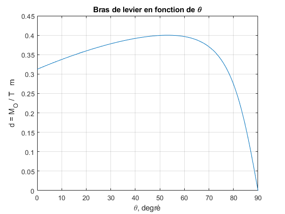

Norme de M
Un pont-levis est soulevé par un câble _AB_ où l'on applique une tension T, ce qui entraîne un moment Mo à l'axe O.
Tracer le rapport d = Mo / T en fonction de l'angle d'élévation thêta entre 0° et 90°.
Déterminer les valeurs minimale et maximale de ce rapport.

Solution – Constater que la direction de T varie selon la valeur de thêta. Rappelons la définition du vecteur moment M = r × F (éq. 2/6), ce qui donne M_o_ = r × T, selon l'énoncé du problème.
Le vecteur r a comme origine le point de rotation O et l'autre extrémité est sur la ligne d'action de la force T.
Comme on recherche une expression alégbrique contenant T, on écrit que T = T n_AB_, où n_AB_ est le vecteur unitaire dans la direction de T.

clear; clc; close all; theta = 0:0.1:90; d = 0.2*cosd(theta)./ ... soit Mo/T sqrt(0.41-0.4*sind(theta)); plot(theta,d); grid on; axis([0,90,0,0.45]); xlabel('\theta, degré'); ylabel('d = {M_O} / {T} m') title('Bras de levier en fonction de \theta')

[valeurMax_d, indiceMax] = max(d); fprintf(... 'Valeur maximale de d = %.2f m à %.1f°\n',... valeurMax_d, theta(indiceMax)); [valeurMin_d, indiceMin] = min(d); fprintf(... 'Valeur minimale de d = %.2f m à %.1f°\n',... valeurMin_d, theta(indiceMin));
Valeur maximale de d = 0.40 m à 53.1° Valeur minimale de d = 0.00 m à 90.0°